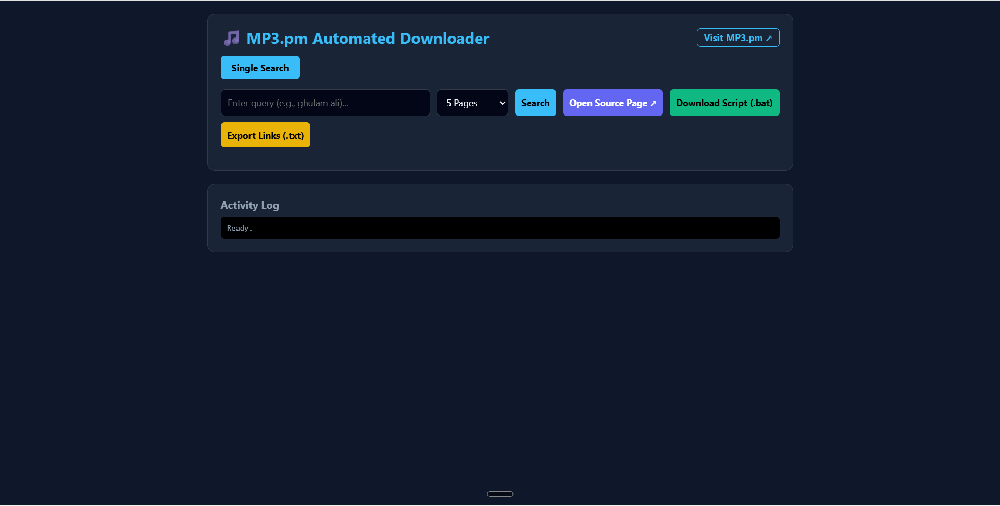
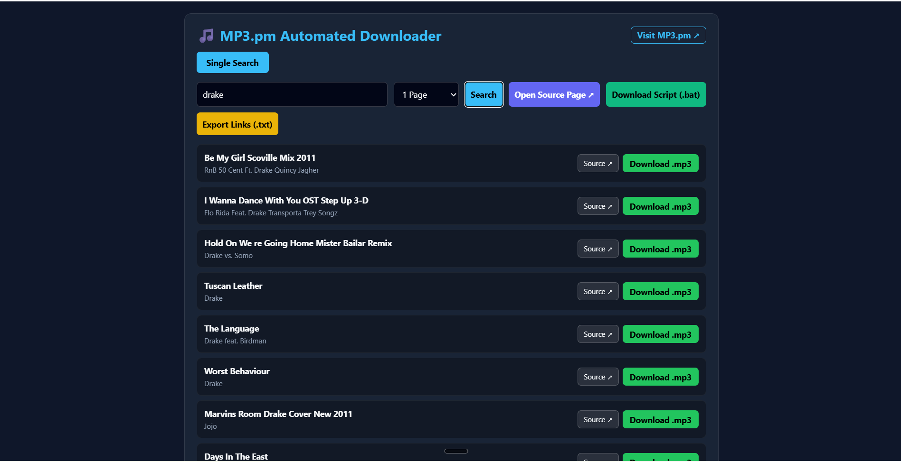

Overview & Features
A high-performance, serverless edge utility deployed on Cloudflare Workers designed to automate search scraping, metadata cleaning, song deduplication, and bulk downloading from mp3.pm.
It provides a sleek, modern glassmorphism web dashboard with native support for multi-page AJAX scraping, dynamic source links, and 1-click batch download automation via native scripts (.bat) or URL manifests (.txt).

Key Features
- 🚀 Serverless Edge Architecture: Built on Cloudflare Workers for ultra-fast performance, low latency, and global edge routing.
- 🎨 Glassmorphism UI Dashboard: Clean, responsive, dark-mode single-page application embedded directly within the Worker.
- 🔍 Multi-Page Search Scraper: Seamlessly scrapes up to 25 pages of search results per query, processing dynamic subdomain routing (
s-[slug].mp3.pm) and AJAX pagination. - 🧹 Metadata Sanitization: Automatically parses HTML entities (
&,', etc.) and strips illegal filesystem characters (/ \ ? % * : | " < >) to guarantee clean track titles and artist names. - 🛡️ Smart Deduplication Engine: Filters out duplicate tracks in real-time across direct audio URLs and artist/title metadata signatures.
- 📥 Choke-Free Bulk Downloading: Avoids browser tab crashes and memory chokepoints by exporting native
.batcurl download scripts or.txtlink manifests. - 🔗 Direct Source Navigation: Quick-access navigation buttons to visit
mp3.pm, view original query pages, or open raw source URLs. - 🛡️ Proxy & CORS Handler: Proxies audio streams to attach proper
Content-Dispositionheaders, enforcing custom.mp3filenames.
System Architecture
The system leverages Cloudflare Workers at the edge to serve both the single-page application dashboard and the API scraping/proxy pipeline.
┌─────────────────────────────────────────────────────────┐
│ User Browser │
└────────────────────────────┬────────────────────────────┘
│
│ HTTP Requests
▼
┌─────────────────────────────────────────────────────────┐
│ Cloudflare Worker Proxy │
└──────────────┬───────────────────────────┬──────────────┘
│ │
▼ ▼
┌──────────────────────────────┐ ┌──────────────────────────────┐
│ Multi-Page Scraper │ │ Audio Proxy Handler │
│ - Subdomain Slug Routing │ │ - Bypasses Hotlink Locks │
│ - AJAX HTML Stream Fetching │ │ - Forces Custom Filenames │
│ - 2-Layer Deduplication │ │ - Streaming Audio Response │
└──────────────┬───────────────┘ └──────────────┬───────────────┘
│ │
▼ ▼
┌──────────────────────────────┐ ┌──────────────────────────────┐
│ mp3.pm CDN │ │ Raw MP3 Stream │
└──────────────────────────────┘ └──────────────────────────────┘Getting Started
Prerequisites
- Node.js (v18 or higher)
- npm
- Cloudflare Wrangler CLI
Installation & Deployment
1. Clone the repository:
git clone https://github.com/pavnxet/mp3dl.git
cd mp3dl2. Install dependencies:
npm install3. Configure wrangler.json (or wrangler.toml):
{
"name": "mp3pm-downloader-hub",
"main": "worker.js",
"compatibility_date": "2026-08-01"
}4. Local Development Test:
npx wrangler devOpen http://localhost:8787 in your browser.
5. Deploy to Cloudflare Workers:
npx wrangler deployAPI Endpoints
1. Serve Dashboard
- Endpoint:
GET / - Description: Renders the embedded Glassmorphism SPA dashboard interface.
2. Multi-Page Search Scraper
- Endpoint:
GET /api/search - Query Parameters:
q(required): Search term (e.g.,ghulam ali)pages(optional): Number of pages to scrape (default:5, max:25)
Response Example:
{
"query": "ghulam ali",
"count": 2,
"tracks": [
{
"url": "https://mp3.pm/download/12345678/track.mp3",
"artist": "Ghulam Ali",
"title": "Hungama Hai Kyun Barpa",
"filename": "Ghulam Ali - Hungama Hai Kyun Barpa.mp3"
},
{
"url": "https://mp3.pm/download/87654321/track2.mp3",
"artist": "Ghulam Ali",
"title": "Chupke Chupke Raat Din",
"filename": "Ghulam Ali - Chupke Chupke Raat Din.mp3"
}
]
}
3. Audio Proxy & Filename Enforcer
- Endpoint:
GET /api/download - Query Parameters:
url(required): Direct audio stream URL.name(optional): Desired output filename (e.g.,Artist - Title.mp3).
- Headers Injected:
Content-Type: audio/mpegContent-Disposition: attachment; filename="Artist - Title.mp3"Access-Control-Allow-Origin: *
Smart Deduplication Engine
To eliminate duplicate recordings, identical remasters, and repeated tracks across multiple scraped pages, the Worker runs a Two-Layer Deduplication Check:
- URL Check: Matches raw download endpoint links to prevent indexing the exact same server resource twice.
- Metadata Signature Check:
- Removes punctuation, special characters, and converts metadata to lowercase.
- Strips secondary tags like
(Remastered 2020),(Live), or(Bonus Track). - Constructs a unique signature string:
${artist}_${title}. - Filters out any subsequent track matching an existing signature key.
Batch Downloading Guide
Downloading 50+ songs simultaneously in a web browser often triggers pop-up blocks or freezes tab memory. This project solves this using external batch management:
Method 1: Using Windows Batch Script (.bat)
- Perform your search in the dashboard.
- Click "Download Script (.bat)".
- Move the downloaded
download_all_songs.batfile to the directory where you want your music saved. - Double-click the
.batfile. A terminal window will open and download all.mp3files sequentially with proper metadata filenames using native Windowscurl.
Method 2: Using External Download Managers (IDM / JDownloader)
- Perform your search in the dashboard.
- Click "Export Links (.txt)".
- Open your download manager (e.g., Internet Download Manager).
- Select Tasks -> Import -> From text file and choose
download_links.txt. - Start batch download at full bandwidth speed.
Live Web Utility: Launch Live MP3.pm Downloader Hub ↗
Open Source & Code: View full source code on GitHub Repository.
Live Web Utility
The MP3.pm Automated Downloader Hub is fully deployed and accessible on Cloudflare Workers. You can try searching and generating batch scripts directly in your browser:
- Live Tool: https://mp3dl.pavneet1804.workers.dev/ ↗
- GitHub Repository: https://github.com/pavnxet/mp3dl ↗